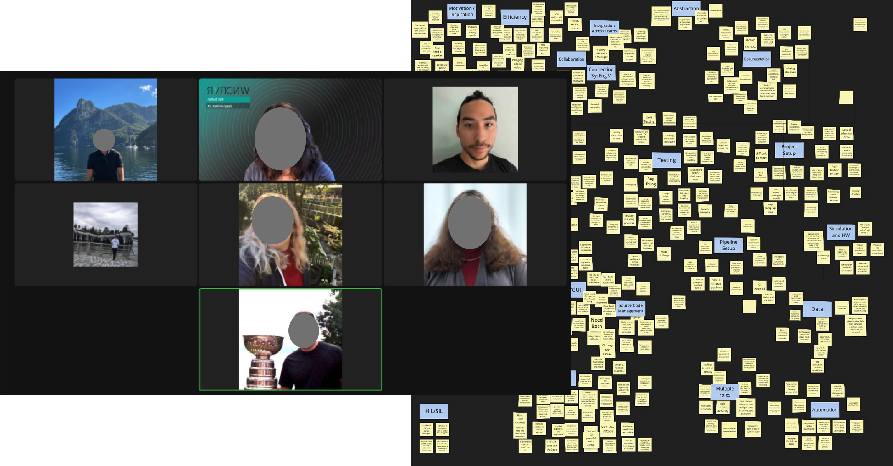
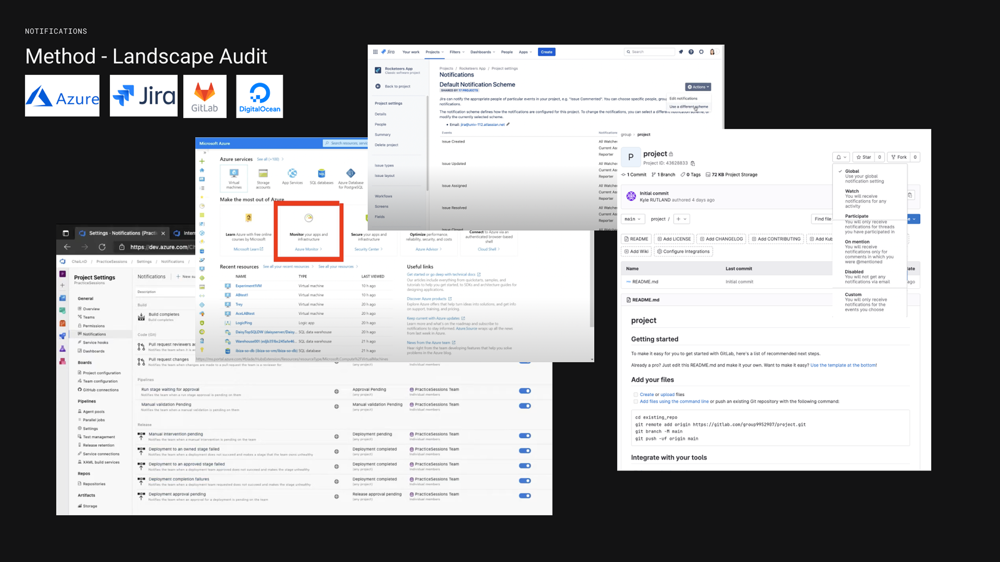
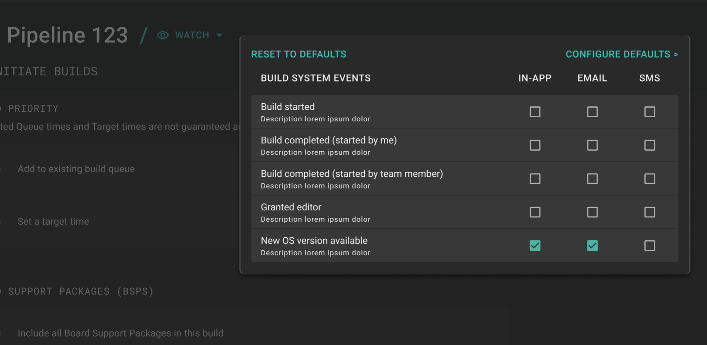
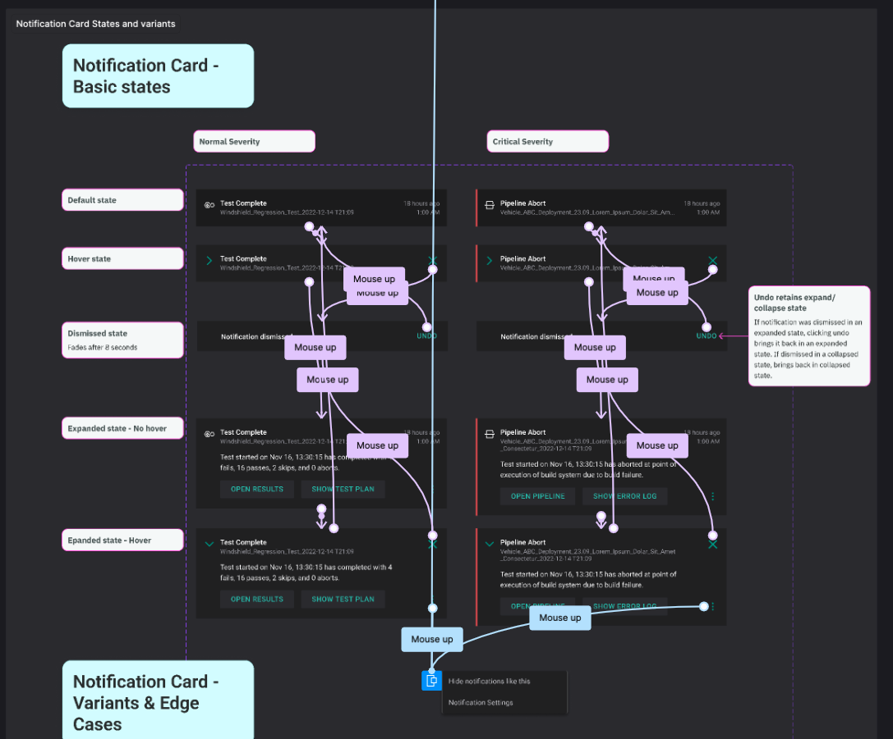
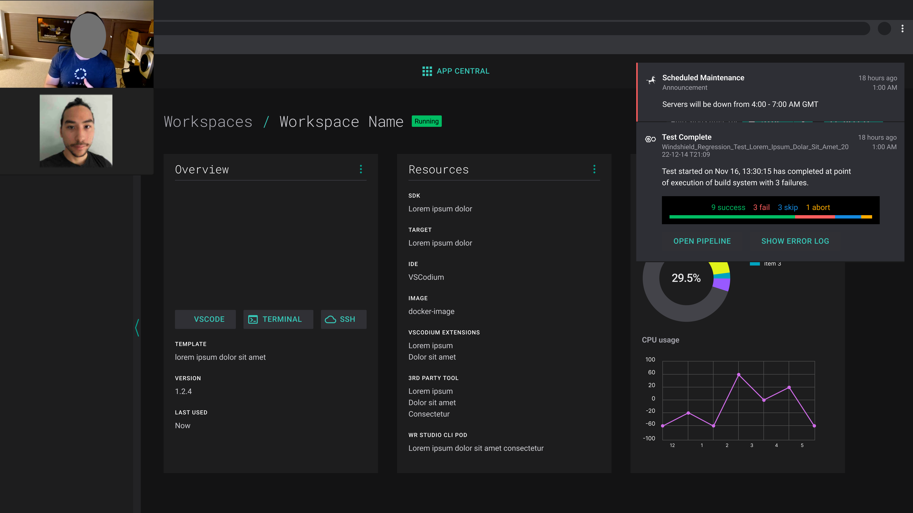

Back to All Work
WindRiver Suite: Unifying Notifications
DevSecOps | Notification Architecture | Systems Design
Wind River's flagship product, Studio Developer, is a suite of DevSecOps applications. Each module had its own notifications — creating a fragmented experience. We were tasked with architecting a centralized notification framework to reduce alert fatigue and accelerate incident response.
Processes: stakeholder synthesis, taxonomy mapping, landscape analysis, wireframes, prototypes, user test facilitation


I conducted landscape analysis of industry leaders (Azure, Jira, GitLab) to decode notification schemas and priority logic. Then I architected a cascading subscription system based on the natural organizational hierarchy of the DevSecOps lifecycle — balancing broad oversight with granular control.

A two-step decision matrix drives delivery: Step 1 — Are they watching this pipeline/project? Step 2 — What severity level is this event set to?
This allows a Manager to monitor holistic project health, while a developer can maintain deep focus by surfacing only high-priority triggers for their specific tasks.

Prototyped a front-end experience that allowed for quickly identifying the source of the notification, and switching it off.
Hid overwhelming event details in an expandable notification card interface.



Phased Rollout: A step-wise release strategy allowed teams to adopt the new framework incrementally.